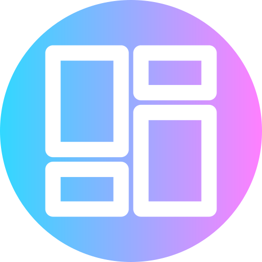

<mat-sidenav-container class="sidenav-container">
  <mat-sidenav
    #drawer
    class="sidenav"
    fixedInViewport="true"
    [attr.role]="(isHandset$ | async) ? 'dialog' : 'navigation'"
    [mode]="(isHandset$ | async) ? 'over' : 'side'"
    [opened]="false">
    <mat-toolbar color="primary">
      Menu
    </mat-toolbar>
    <mat-nav-list>
      <a mat-list-item href="#">Link</a>
    </mat-nav-list>
  </mat-sidenav>
  <mat-sidenav-content>
    <mat-toolbar color="primary" class="primary-color">
      <button
        type="button"
        aria-label="Toggle sidenav"
        mat-icon-button
        (click)="drawer.toggle()">
        <mat-icon aria-label="Side nav toggle icon">menu</mat-icon>
      </button>
      
      <span>Dashboard Pi</span>
    </mat-toolbar>
  </mat-sidenav-content>
</mat-sidenav-container>
